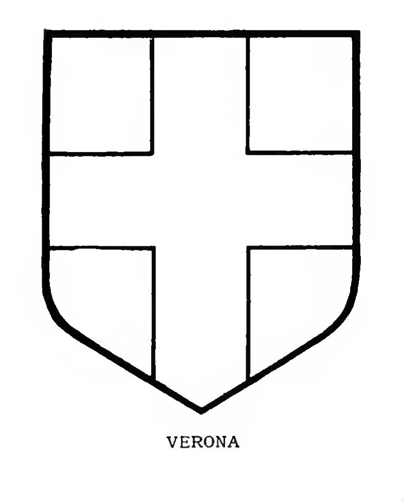

<p class="content"><span class="entry">VERONA </span>(Italy). Azure, a cross or.</p>
<p class="reference">Original Source <a href="https://archive.org/stream/bookofpublicarms00foxd/bookofpublicarms00foxd_djvu.txt">bookofpublicarms00foxd_djvu.txt</a> near line 26680.</p>

<figure class="public-arms-illustration">

<figcaption>VERONA (Italy).</figcaption>
</figure>
